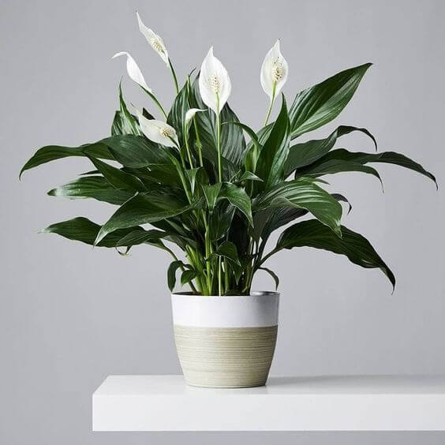

The Peace Lily is known for its elegant white blooms and strong air-purifying abilities.
Prefers low to medium light. Avoid direct sunlight.
Water weekly. The plant droops when thirsty — a natural indicator!
Keeps best at 18–26°C.
Use rich, moisture-retentive soil. Repot yearly for faster growth.